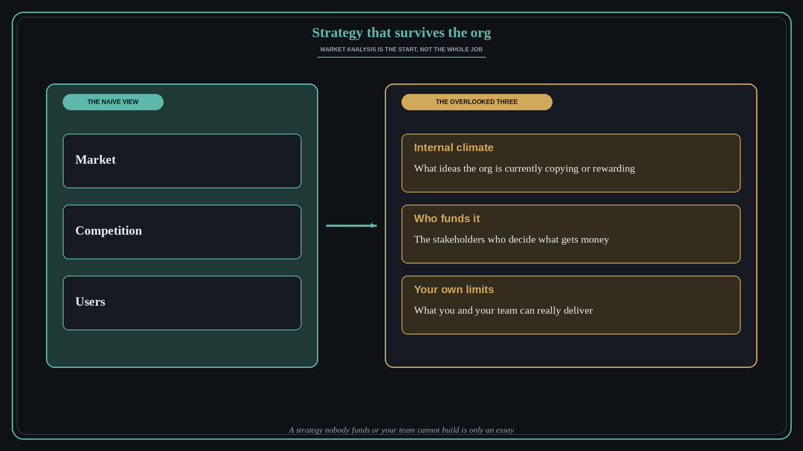

Strategy that survives the org
Source: George Nurijanian (@nurijanian)
original post
What it claims
A naive strategy looks only at the market, the competition, and users. That is a good start. The most overlooked part of strategic work inside organizations is adjusting for three more things: the internal climate (which ideas the org is currently copying or rewarding), the stakeholders who decide what gets funded, and your own and your team's real limitations.
Why it matters for a PO
A PO can write a sharp market-driven strategy that still goes nowhere because nobody with budget wanted it, or because the team cannot deliver it. Reading the internal climate and the funding path is part of the craft, not politics to be ashamed of. Being honest about your team's limits keeps the strategy executable.
3 takeaways
- Start with market, competition, and users, but do not stop there.
- Map who funds the work and what the org currently rewards before you commit.
- Size the strategy to what you and your team can really deliver.
Practice this week
Take your current strategy or roadmap one-pager. Add three short lines: what the org is rewarding right now, who must fund this and what they care about, and the biggest limit of your team. Adjust one bet based on what you wrote.